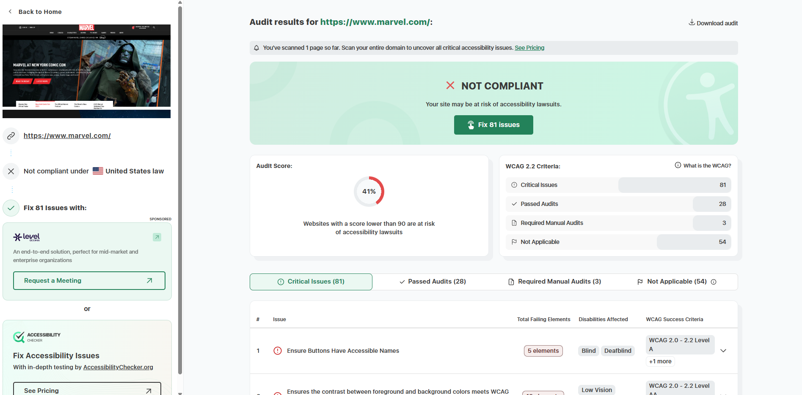

Below is a screenshot from the Accessibility Checker showing the audit results for marvel.com.
The URL of the website I evaluated is https://www.marvel.com
The name of the website is Marvel.
The target audience is anyone seeking any information regarding marvel: toys, videos, comic books, etc.
The site is organized into clear, categories. The main navigation bar at the top separates content into "News," "Comics," "Characters," "Movies," "TV Shows," "Games," "Videos," and "More." This makes it easy for users to immediately find the specific type of content they are looking for.
The site uses Repetition. This is seen in the layout for all its news articles and character bios. Each item in a list is presented as a "card" with an image, a bold title, and a short description.
Accessibility Checker gave it an audit score of 41%.
The site's effectiveness is strong. If a user want's to know about the newest Fantastic Four movie and the characters within it, they can quickly search for it and all the information desired will be shown.
The site is very efficient. Most pages load quickly and the well organized menus mean users don't have to waste time guessing where to find information.
The site's engagement is extremely strong. It's filled with large high quality images and video clips from the movies and comics. It's exactly what someone interested in Marvel would enjoy exploring.
Accessibility Checker says that a critical problem is to ensure links have discernible text. This basically means that the site uses links with undescriptive labels like "Load more" or "Read more". This could be fixed by being more descripive, for example, "Click here for more information on Captain America."